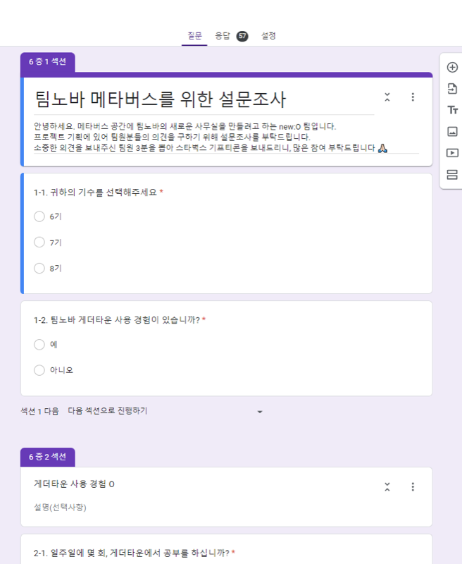
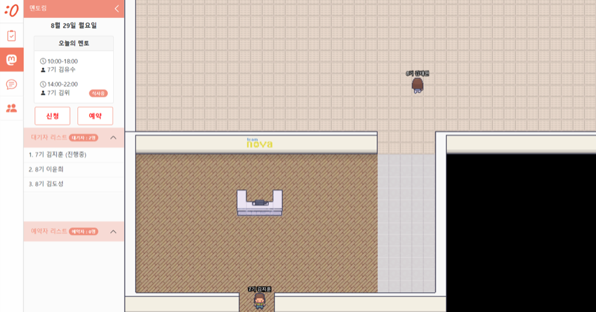
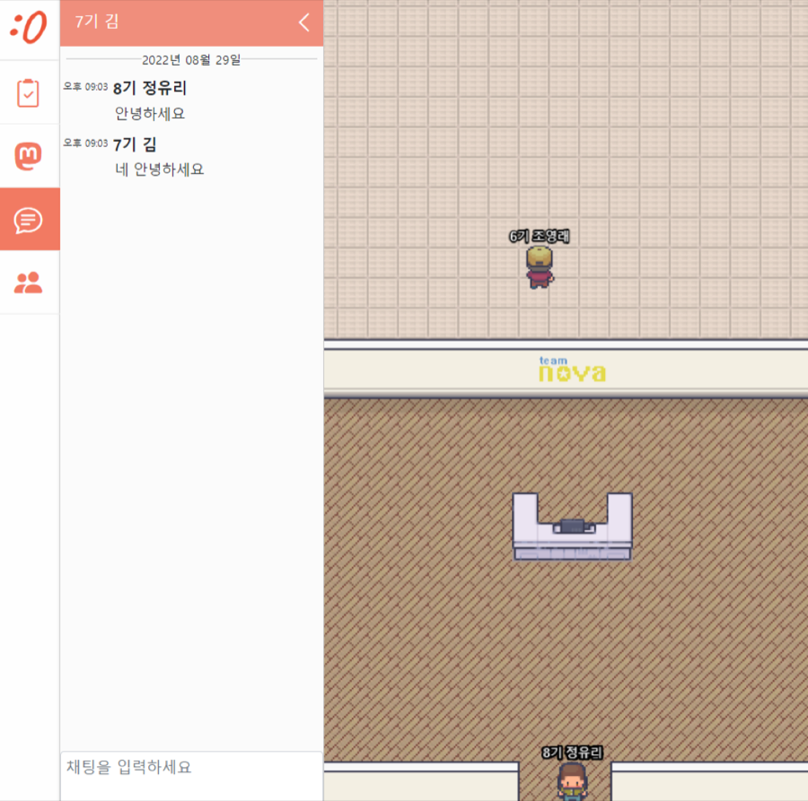
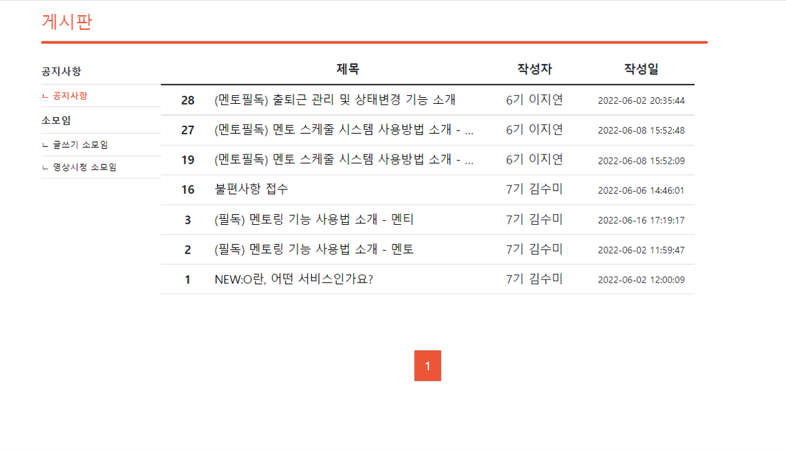
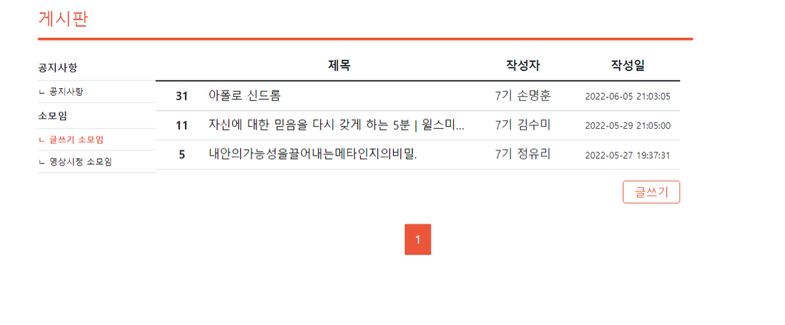
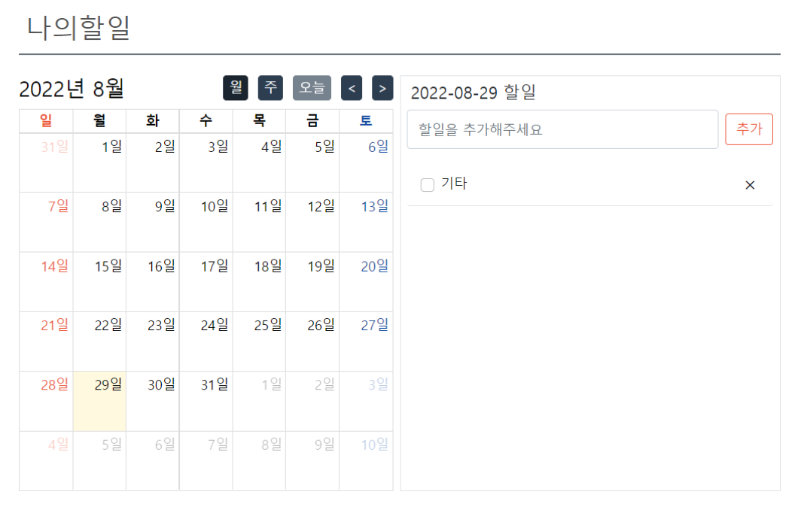

뉴오는 학원 직원들이 팀노바 학생들을 효율적으로 관리할 수 있도록 만든 학원생 관리 서비스입니다.
코로나로 대면 업무가 어려워진 상황에서, 메타버스 기반 시스템을 도입해 소통과 관리가 원활하게 이루어지도록 개선한 플랫폼입니다.
목표는 “새로운 오피스 공간”이었습니다.
화상회의 도구는 회의가 있을 때만 켜지지만, 학원 커뮤니티에는
딱히 용건이 없어도 같은 공간에 있다는 감각이 필요했습니다.
그래서 접속하면 계속 머무는 형태의 2D 공간을 선택했습니다.
팀과 담당 범위
4명이 4개월간 진행했고, 저는 팀원으로 참여해 다음 비중으로 기여했습니다.
백엔드 개발 — 기여도 40%
프론트엔드 개발 — 기여도 30%
아이디어 제공 — 기여도 30%
한 사람이 특정 레이어만 맡기 어려운 규모였습니다.
그래서 기능 단위로 나눠 게시판·할 일·멘토링처럼 화면과 서버를 한 사람이 끝까지 붙이는 방식으로 진행했습니다.
기획 단계 — 사전 설문
사용자가 원하는 서비스를 만들기 위해 개발 전에 사전 설문조사를 진행했습니다.
기수(6기·7기·8기)를 먼저 구분하고, 기존에 쓰던 게더타운 사용 경험이 있는지,
있다면 일주일에 몇 번 그 공간에서 공부하는지를 물었습니다.
“메타버스가 필요한가”를 묻지 않고 이미 하고 있는 행동의 빈도를 물은 것이 이 설문의 요점입니다.
기존 도구를 실제로 얼마나 쓰는지 알면, 새로 만들 공간이 대체해야 하는 수준도 정해집니다.
설문에는 57건의 응답이 모였고, 이 결과를 기준으로 만들 기능의 순서를 정했습니다.

사전 설문조사. 응답 57건.
서비스 출시 후에도 개선을 위한 사용자 의견을 지속적으로 수렴했습니다.
게시판에 ‘불편사항 접수’ 글이 올라오고, 그 내용이 다음 기능 수정으로 이어지는 구조였습니다.
메타버스 공간
캐릭터 선택
캐릭터 선택 모달. 선택 상태를 테두리로 표시하고 확정 버튼을 따로 둬,
고르는 중과 고른 뒤를 구분했습니다.
공간과 접속자
왼쪽에 현재 접속자 목록, 오른쪽에 공간.
캐릭터마다 기수와 이름을 이름표로 붙여, 맵 안에서 바로 누구인지 알 수 있게 했습니다.
접속자 목록을 공간 옆에 상시 노출한 것은 의도한 선택입니다.
맵을 돌아다니며 누가 있는지 찾게 하지 않고, 목록에서 먼저 확인하고 찾아가는 순서가 되도록 했습니다.
멘토링과 채팅

멘토링 — 멘토별 가능 시간, 마감 표시, 대기자와 예약자 목록을 한 패널에 모았습니다.

채팅 — 공간을 벗어나지 않고 왼쪽 패널에서 대화합니다.
멘토링은 “지금 대기 중인 사람이 몇 번째인지”가 가장 중요한 정보라고 봤습니다.
그래서 시간표보다 대기자 리스트를 같은 화면에 놓고, 진행 중인 항목을 표시했습니다.
채팅과 멘토링 모두 공간을 가리지 않는 왼쪽 패널로 열려, 대화하면서도 맵이 계속 보입니다.
웹 서비스
메타버스 공간이 “머무는 곳”이라면, 웹 쪽은 기록이 남아야 하는 기능을 담당했습니다.
공지와 소모임 글, 개인 할 일처럼 접속을 끊어도 남아야 하는 것들입니다.
게시판

게시판. 카테고리를 왼쪽에 고정하고 목록은 번호·제목·작성자·작성일만 남겼습니다.
제목 앞에 (멘토필독), (필독)처럼 대상을 표시해 목록에서 바로 걸러 읽을 수 있게 했습니다.

소모임 게시판. 목록 오른쪽 아래에 글쓰기 버튼을 둡니다.

할 일. 달력에서 날짜를 고르면 오른쪽에 그 날의 목록이 열립니다.
할 일 화면은 달력과 목록을 좌우로 붙였습니다.
날짜를 고를 때마다 화면이 바뀌면 흐름이 끊기기 때문에,
달력은 그대로 두고 오른쪽 목록만 교체되도록 했습니다.
기술 스택
2D 공간 렌더링과 캐릭터 이동은 Phaser.js로 처리했고,
여러 사람의 위치·채팅을 실시간으로 주고받는 부분은 Java WebSocket으로 붙였습니다.
접속자 위치처럼 자주 바뀌고 오래 보관할 필요 없는 값은 Redis에,
게시판·할 일처럼 남아야 하는 데이터는 MariaDB에 나눠 저장했습니다.
HTML/CSS · JavaScript
PHP · Java
Phaser.js
Java WebSocket
Bootstrap
MariaDB · Redis
Nginx · HTTPS
Git · GitHub
정리
뉴오는 제가 처음으로 만들기 전에 물어본 프로젝트입니다.
설문 57건이 알려준 건 “메타버스를 원한다”가 아니라 “게더타운을 이 정도 빈도로 쓴다”였고,
그 숫자가 기능의 우선순위를 정했습니다.
4개월이라는 기간 안에서 공간과 웹 기능을 모두 넣으려면 무엇을 빼야 하는지도 계속 판단해야 했습니다.
결과적으로 머무는 기능은 공간에, 남는 기능은 웹에 나눈 구분이 이 프로젝트의 골격이 됐습니다.